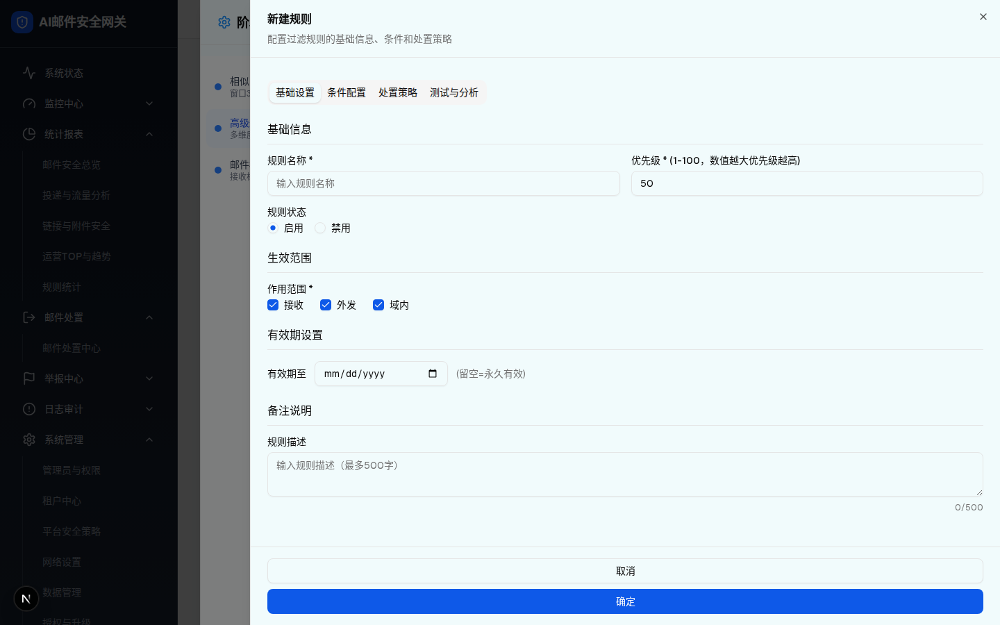
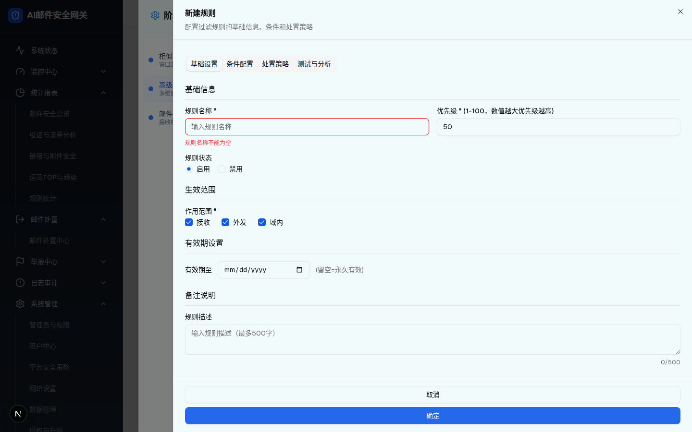
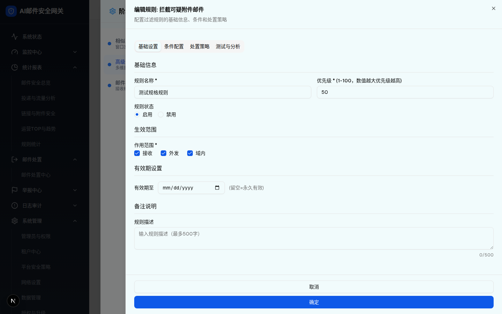

| 所属组件 | 3.2 规则编辑抽屉 RuleEditorDrawer（75vw Sheet） |
| 主文件 | filter-rules-pipeline-advanced-rules/index.html |
| 触发路径 | 层级1 点击「新建规则」（标题「新建规则」）或行内 ✎ 编辑（标题「编辑规则: {名称}」）→ 抽屉默认停在「基础设置」Tab |
| demo 源 | advanced-filter-rules-module.tsx L3319-3459（basic Tab）、L3008-3038（handleSave 校验） |



| 分区 | 字段 | 控件 | 默认值 | 校验/说明 |
|---|---|---|---|---|
| 基础信息 | 规则名称 * | Input text，placeholder「输入规则名称」 | 空 | 必填；空提交→「规则名称不能为空」红框红字；输入时清除错误 |
| 优先级 * | Input number min=1 max=100 | 50 | label 附注「(1-100，数值越大优先级越高)」——与网关统一规则系统优先级语义一致 | |
| 规则状态 | RadioGroup 启用/禁用 | 启用 | — | |
| 生效范围 | 作用范围 * | Checkbox×3 接收/外发/域内 | 三项全选 | 至少选一；全不选提交→「请至少选择一个生效范围」 |
| 有效期设置 | 有效期至 | Input date | 空 | 附注「(留空=永久有效)」；保存时写入 expiryTime |
| 备注说明 | 规则描述 | Textarea maxLength=500 | 空 | 右下实时字数「N/500」 |
| Footer 取消 / 确定 | Button×2（1440px 实测上下通栏堆叠） | 确定 disabled=!canSaveActions | 确定点击先校验 name/scope（失败跳回本 Tab），再校验处置策略（层级4） | |
useState(() => { if (rule) {…} }) 做“初始化回填”，但该初始化只在组件首次挂载执行（此时 rule 恒为 null），且 RuleEditorDrawer 未按 rule.id 加 key 强制重挂载 → 编辑任何规则表单都不回填，且保留上一次的输入。spec §4.4 要求「打开规则编辑抽屉并回填数据」。详见主文件 §9。| 比对项 | demo 实际 DOM（Playwright 提取，抽屉总节点 82） | 预览还原 HTML | 是否一致 |
|---|---|---|---|
| 根节点 | SheetContent div.w-[75vw]，子结构：SheetHeader（标题+副标题）+ TabsList(4 tab) + ScrollArea 表单 + Footer | .dw > .dw-head + .tabs + .dw-body + .dw-foot | 一致 |
| Tab 数量与文案 | 4：基础设置(active) / 条件配置 / 处置策略 / 测试与分析 | 同 4 项同顺序，active 样式同 | 一致 |
| 表单控件 | inputs: text("")/number("50")/date("")/textarea("")；radio 启用=checked；checkbox 接收/外发/域内 全 checked（Playwright 逐项断言） | 同默认值 | 一致 |
| 四个分区标题 | 基础信息 / 生效范围 / 有效期设置 / 备注说明 | 同 4 分区 | 一致 |
| 错误态 | 空名提交后 input 红框 + p「规则名称不能为空」出现 | 同逻辑同文案（点确定复现） | 一致 |
| 编辑态差异 | 编辑规则1时：标题「编辑规则: 拦截可疑附件邮件」+ nameInput=""（缺陷） | 预览以「新建规则」呈现；编辑态缺陷以截图+D-3 说明呈现 | 一致（呈现方式已声明） |